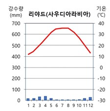

기상정보
건조기후
기상정보
건조기후 맞춤형
도시 인프라(1)
건조기후 맞춤형
도시 인프라(2)

<기상 정보>
기온: 낮과 밤 기온 차 30도~40도.
연 강수량: 불규칙적, 연강수량 500mm 미만 (증발량>강수량)
습도: 수증기가 적고 지형적으로 바다와 멀리 떨어져 있기에 일반적으로 낮음
구름: 건조 기후는 수증기가 적고 사막과 같은 지형에서는
바람이 빠르게 움직이기 때문에 구름이 형성되기 어려워
일반적으로 구름이 적고 대기가 맑음